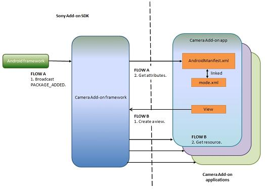

|
|||||||||
| PREV PACKAGE NEXT PACKAGE | FRAMES NO FRAMES | ||||||||
See:
Description
| Interface Summary | |
|---|---|
| CapturingModeSelector.OnModeFinishListener | Interface definition for a callback to be invoked when the user changes capturing mode to a mode which belongs to different package or activity. |
| CapturingModeSelector.OnModeSelectListener | Interface definition for a callback to be invoked when the user changes capturing mode to a mode which belongs to current package and activity. |
| Class Summary | |
|---|---|
| CapturingModeSelector | This class opens and closes the capturing mode selector. |
The Camera Add-on API provides classes which manage registration for the Camera Add-on
framework as well as interfaces which allow navigating the Camera Add-on UI.
Below is a block diagram of the Camera Add-on framework.

The Camera Add-on framework provides two functions:
<uses-permission android:name="com.sonymobile.permission.CAMERA_ADDON"/>
<application>
<activity>
<intent-filter>
<action android:name="com.sonymobile.camera.addon.action.REGISTER_MODE"/>
</intent-filter>
<meta-data android:name="com.sonymobile.camera.addon.MODE_ATTRIBUTES"
android:resource="@xml/sample_mode_attributes"/>
</activity>
<uses-library android:name="com.sonymobile.camera.addon.api" />
</application>
sample_mode_attributes.xml:
<?xml version="1.0" encoding="utf-8"?>
<modes
xmlns:android="http://schemas.android.com/apk/res/android">
<mode
name="sample mode name"
selectorIcon="drawable resource"
selectorLabel="string resource"
descriptionLabel="string resource"
shortcutIcon="drawable resource"
shortcutLabel="string resource">
<uses-feature android:name="string"/>
</mode>
</modes>
In this xml file, there are two types of attributes.
The first attributes are mandatory attributes, while the others are optional attributes.
If mandatory attributes are not set, the mode is not registered as a add-on application.
Mandatory attributes are "name", "selectorIcon", "selectorLabel" and "descriptionLabel".
Optional attributes are "shortcutIcon", "shortcutLabel" and <uses-feature>.
CapturingModeSelector.
|
|||||||||
| PREV PACKAGE NEXT PACKAGE | FRAMES NO FRAMES | ||||||||